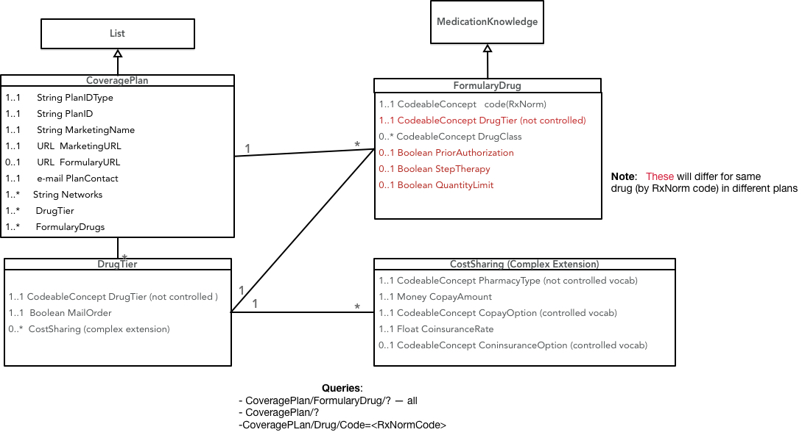

May 19, 2019 - V0.2.0 This is an initial draft version of the US Drug Formularies Health Level 7 (HL7) Fast Healthcare Interoperability Resources (FHIR) profiles, extensions, value sets, and code systems. It is incomplete and subject to change without notice.
This project is a proof-of-concept for a FHIR interface to a payer's drug formulary information. A formulary is a list of prescribable drugs/products published by a health plan, pharmacy benefit manager, payer, or provider. The primary use cases for this FHIR interface are support for applications targeting consumers/patients that will allow them to understand the costs and alternatives for drugs that have been prescribed, and to compare their drug costs across different insurance plans.
This implementation guide (IG) consists of 3 FHIR profiles:
The implementer will choose one of two profile combinations:
The CoveragePlan profile contains an List.item.entry which references both FormularyDrug and FormularyDrugOption2 to allow for reuse of development code.
There was some deliberation on whether Medication or MedicationKnowledge was the better option. For example, MedicationKnowledge by definition and structure seems more appropriate for representation of a drug formulary as a knowledge artifact however, at the time of this writing, the resource is currently FHIR Maturity Level 1 and could be more resilient to iterative change as part of the base FHIR release. Alternately, the FHIR Medication resource is more mature, has been adopted by a greater number of implementers, but might be too limiting for our needs, resulting in an increased number of extensions over time. Given these trade-offs, we encourage implementers to provide feedback on the preference of these options.
Once the preferred formulary drug option is determined, we will re-release another version of the IG which further constrains the CoveragePlan List.item.entry so that it only references the chosen formulary drug profile.
Formularies in the United States are normally published by health insurers on an annual basis, with minor annual updates. There are occasional emergency releases of formularies when a new drug is released to the public or an existing drug is removed from coverage.
Insurers regularly administer multiple health plans and each of those plans may have its own formulary.
Each formulary contains a list of drugs. Drugs are placed into tiers that largely determine the cost to the consumer/patient. The number and purpose of drug tiers varies across payers. Each tier has an associated cost-sharing model that includes deductibles and/or coinsurance components for drugs in the tier when purchased through various pharmacy types.
In addition to the drug tier, drugs may also list requirements on the patient (e.g., or gender) or limitations on prescription (e.g., prior authorization).
The initial draft has been designed to closely follow the formulary information model of the formularies for Qualified Health Plans (QHPs) on the federal health insurance marketplace for healthcare.gov. Publishing formularies in the QHP format is familiar to many payers. Drugs are specified by RxNorm codes of prescribable drugs, as constrained by the US Core Medication Codes value set. The QHP data model mandates specific value sets for some data types (e.g., types of copayments), but leaves value sets for other data types at the discretion of the payer (e.g., drug tier identifiers, pharmacy types). and does not include data that is fairly standard across formularies (drug classifications, alternative drugs). These decisions may need to be reconsidered in order to maximize the value of FHIR-published formulary data to consumers/patients.
The following object model shows the relationships between the resources in the current IG. This Implementation Guide is intended for insurers within the United States. Currently, many insurers make their formularies available to patients using PDFs or drug search forms on their websites. Providing formularies using FHIR may allow patients to more easily comparison-shop between plans and could help insurers educate consumers about the differences between various drug tiers/classes.


This section tracks open issues/questions/concerns about the draft implementation guide and its components. It should be deleted if/when the IG is released.
Consideration was given to using Medication or MedicationKnowledge resources as the basis for FormularyDrug. MedicationKnowledge was used based on the direction of the HL7 Pharmacy Working Group. Although the current IG makes minimal use of the defined fields of MedicationKnowledge, the expectation is that additional fields would be used over time as the FormularyDrug and MedicationKNowledge resources mature.
There may be alternatives to a particular drug in the formulary. The current IG, based on the QHP model, does not include them. These alternatives could be presented using the drug's classification, or by enumerating alternative RxNorm codes.
Drug tiers are not standardized. The current IG provides a defined value set for tier identifiers based on the example list in the QHP formulary specification. A move towards standardization might make this data more useful for clients of the interface.
There are several different drug classification schemes in use (e.g., ATC0-4). A move towards standardization of drug classifications in consumer-facing formularies might make this data more useful for clients of the interface.
Pharmacy types are not standardized. The current IG provides a defined value set for tier identifiers based on the example list in the QHP formulary specification which mixes channels (retail and mail order) with quantity prescribed (1 month, 3 month, etc). A move towards standardization might make this data more useful for clients of the interface.
The current CoveragePlan profile uses LOINC 82215-5 (Medical equipment or product list) as the Formulary.code
There is no single, authoritative indentifier that can be associated with a formulary (e.g., like NPI numbers identify providers in the United States). How can unique formulary IDs be provisioned such that they can be implemented consistently by all payers and referenced by other entities (e.g., health plans)? The NCPDP F&B eRx implementation guide requires an identifier for each formulary. Perhaps that can be leveraged. Similarly, how can a client application find the endpoint for a particular formulary? Is a directory of formularies needed?
There aren't many good LOINC or SNOMED codes for administrative health items. This IG may require some new ones:
The current Formulary profile uses LOINC 82215-5 (Medical equipment or product list) as the
Formulary.code